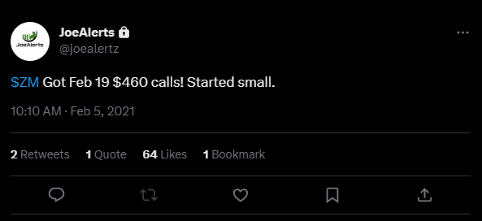
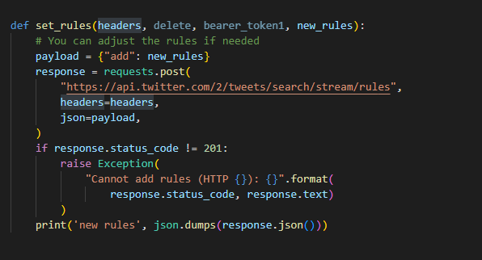
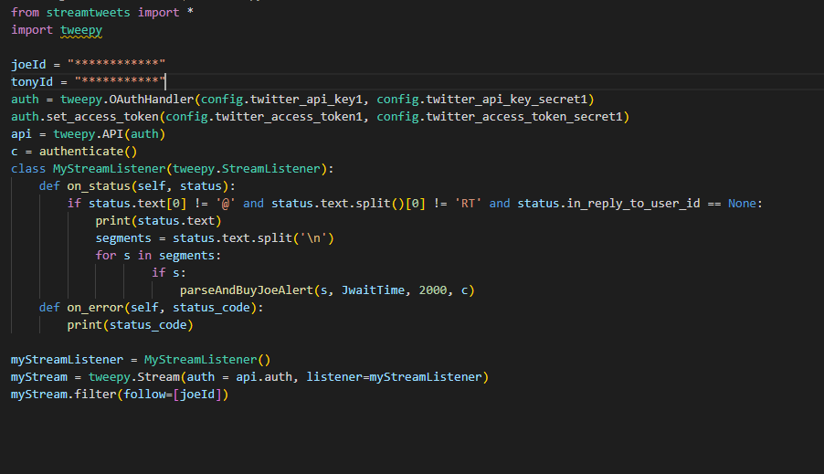
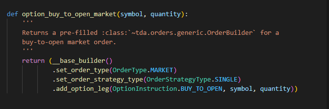
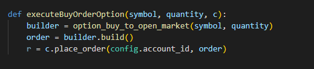
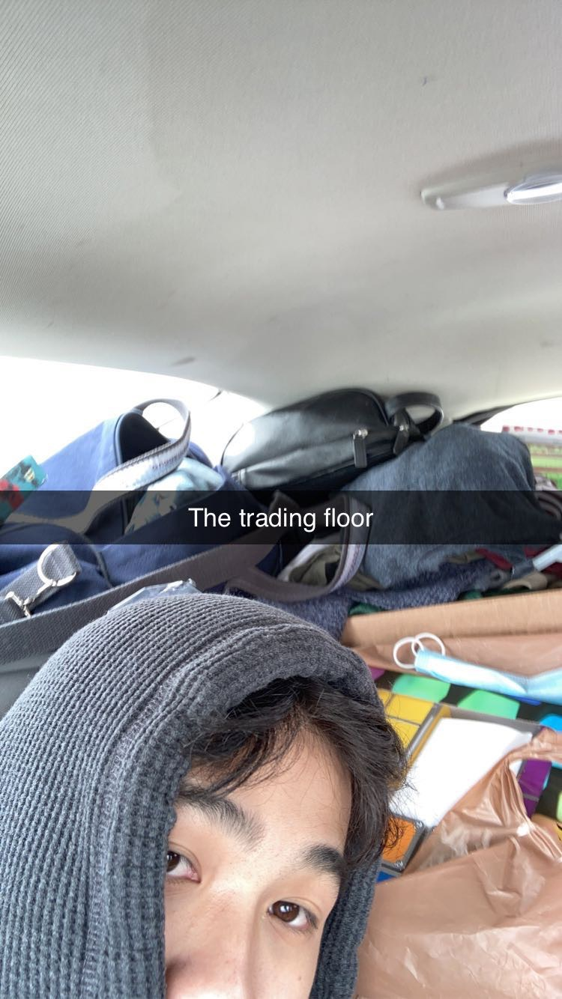

How I made thousands while road tripping across the American West with Automated Options Trading
4/10/23
Usually, planning a vacation requires careful budgeting, especially if you’re a fresh college grad with no source of income like I was in December 2020. With many of my friends also graduating or on break from December through January, I made plans with them to go on a ski trip in Colorado right after the new year. Though I had only planned for the trip to last a week, I would end up on a road trip lasting close to a month, starting in Colorado and ending in California, made possible by a Python script which automatically traded options.
THE STRATEGY
After I graduated in early December 2020, I was approached by some friends about a trading strategy which could make us money with relatively small risk. The idea was to track finance gurus on Twitter to find stocks and options (if you don’t know what an option is, check out the Investopedia article here) they advertised and trade on the volume increase that would follow right after the tweet. Here’s why this strategy worked: in 2020, there was a massive bull run following the pandemic which attracted many new investors to the stock market. This created an opportunity for lots of finance gurus on Twitter to gain a sizable following by sharing their trades. These gurus provided easy exposure to trading ideas for newbies, but since the gurus often tweeted about niche stocks, it was often easier just to follow whatever trade was tweeted instead of trying to understand the idea behind the trade. Some gurus would even announce that they bought a stock or option in real time, and their followers would immediately buy that same stock or option following the tweet. Sometimes, the trade tweeted would be traded on a very low volume (this was almost always true if an option was tweeted), and the volume from the Twitter followers on its own would be enough to boost the price of the stock or option. So, if we were able to buy these securities faster than anyone else could after they were tweeted, we’d be able to make a profit.
Example Tweet:
THE IMPLEMENTATION
My friends came to me with this strategy because I was the only coder they knew, so it was up to me to do all
the coding. For the first iteration, I decided on using Twitter API along with TDAmeritrade API, since
everyone was already familiar with TD’s platform, Thinkorswim. I found this handy Python library,
tda-api, for interacting with TD’s API (doc here) which made it much easier to handle.
First, I wrote Python code to authenticate with TDAmeritrade API using tda-api. All I needed to
do was supply my API key from my TD developer account, and call the authenticate() function. This would then
launch a Selenium browser window prompting me to login to my account, and after I did, an access token would
be stored in my local directory.
First, I wrote Python code to authenticate with the TDAmeritrade. All I needed to do was supply my API key
from my TD developer account, and call the tda-api authenticate() function. This would then
launch a Selenium browser window prompting me to login to my account, and after I did, an access token would
be stored in my local directory.
To get tweets in real time, I used Twitter’s stream tweets feature, which lets you create a live time stream of tweets and apply rules to the stream, such as filtering only for tweets by specific users. My first implementation of the stream looked like this:
Later, I found tweepy, a Twitter API library and was able to produce much cleaner code
For every tweet that came in, I needed to parse to find if there was a stock or option mentioned, and if there was a buy signal. This was particularly challenging because many of the tweets we were looking for (and which produced the most profit) were tweets mentioning options, and to buy options I needed to parse from the tweet a strike price, ticker symbol, expiration date, and information about whether the option was a call or put. I couldn’t rely on the tweets to have all that data neatly formatted, so I needed to write code that could make inferences when there was insufficient data without accidentally buying the wrong option. Fortunately, many of the gurus we followed would tweet in predictable formats, but it was still tricky to account for different date strings, unexpected characters or newlines breaking up tweets, retweets, typos, etc. Stocks were slightly easier since I only needed a ticker symbol, but the buy signal was harder to figure out since almost every tweet contained at least one ticker symbol, so I needed to look for words (and even emojis sometimes) explicitly suggesting followers buy that stock.
Once my script had determined a security and buy signal, it would form the symbol string, pass said string to tda-api, and buy the security with a predetermined hold time, after which it would sell the security. The time from the publishing of a tweet to the buying of a security was about 10 to 13 seconds.
Once my script had determined a stock or option and buy signal, it would form the symbol string, pass the string to tda-api, and buy the security with a predetermined hold time, after which it would sell the stock or option.
Code for building order:
Code for placing order:
THE TRIP
I started development on the script in mid December, and it made its first profitable trade near the end of December. We started with small position sizes of 500-600 dollars per trade since we were worried about the code firing false positives. In early January, I went on my ski trip in Colorado, and the script would make a few hundred dollars every day while I was out skiing. As the ski trip drew to a close, it was clear that the system was working, so we upped our position sizes to over 1000 per trade.
Though I was supposed to fly home after the ski trip, I decided to stay a while longer at my friend’s house in Denver and travel some more. Coincidentally, another one of my friends needed to deliver a car full of his girlfriend’s belongings from Ohio to her new apartment in San Francisco, so we both tagged along for a road trip. On the road, I’d still run the script by connecting my laptop to my phone’s hotspot. Trading from the back of that packed 2014 Ford Focus was truly one of the all time moments of my life.
Just one day into the trip, we were in Salt Lake City and tested positive for COVID. We ended up having to stay in an Airbnb twenty minutes from the city to quarantine for ten days. Road trip was off to a great start so far!! On the bright side, we were able to keep making money while in quarantine. By the end of the ten days, we had grown our account from 25k to about 30k. We also got the chance to try some of SLC’s famous Indian cuisine (recommended by our Airbnb host).
After the ten days were up, we continued making our way to SF. As we were passing through Reno, the script had its largest trade ever, profiting over 7.5k, or 32%. Finally, a few days later, we finally arrived in SF. Though that was supposed to be the end of the trip, I decided to keep the party going by booking an Airbnb for two more weeks, which I spent visiting the surrounding parks, going to the local bars, and eating at a different restaurant every night - all funded with the money I was making on the road.
RETROSPECTIVE
In the month of January, we increased our account size from 25k to about 40k. In the following months, though I continued running the trading code, it wasn’t able to produce as much profit as it did in January due to the market cooling down around March. My friends and I did end up pitching our strategy to an investment fund in exchange for an internship, but I was starting full time as a software developer in April, so the internship was short lived.
Here’s a slide we presented regarding January performance that I found insightful:
I continued to run the script through the end of 2021, but with much smaller position sizes. For the rest of the year, I worked on improving my code to be more efficient and accurate. Here are some areas I addressed:
- Use v1 twitter stream instead of v2 to reduce latency from 10 seconds to 5 seconds
- Switch to trading via Webull API to avoid paying trading commissions
- Create and dynamically update a blacklist of stocks to avoid buying a stock twice in case a user makes a tweet, deletes it because of a typo or something, then sends the makes tweet again
- Verify stock or option has low volume first before making any trades
- Place limit orders instead of market orders and dynamically generating limit prices based on live data
- Using spread (difference between bid and ask prices) to avoid buying volatile stocks/options
It was amazing to be able to work on a project that had a direct impact on my life instead of the generic school projects I had become accustomed to doing. This experience was a visceral reminder that anyone can use software to change their life and that there’s always room for innovation, even if you’re not a coding genius or working at a big company. My passion for programming has only grown since this journey, and I can now put words to why I love it so much - because for me, the sense of agency, creativity, and investment that can be found in programming cannot be replaced by anything else.
If you want to look at more of the code, here's a link to the Github Repo: https://github.com/YEESH421/Automated-Trading